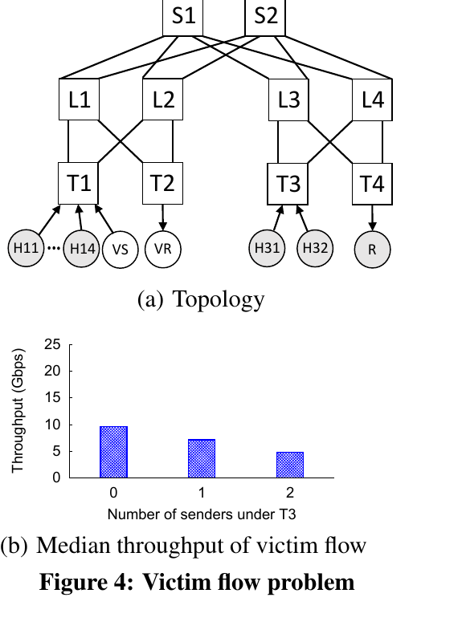
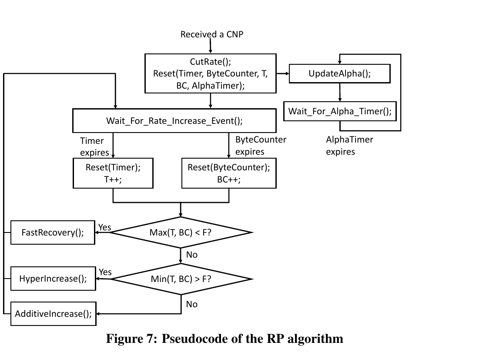
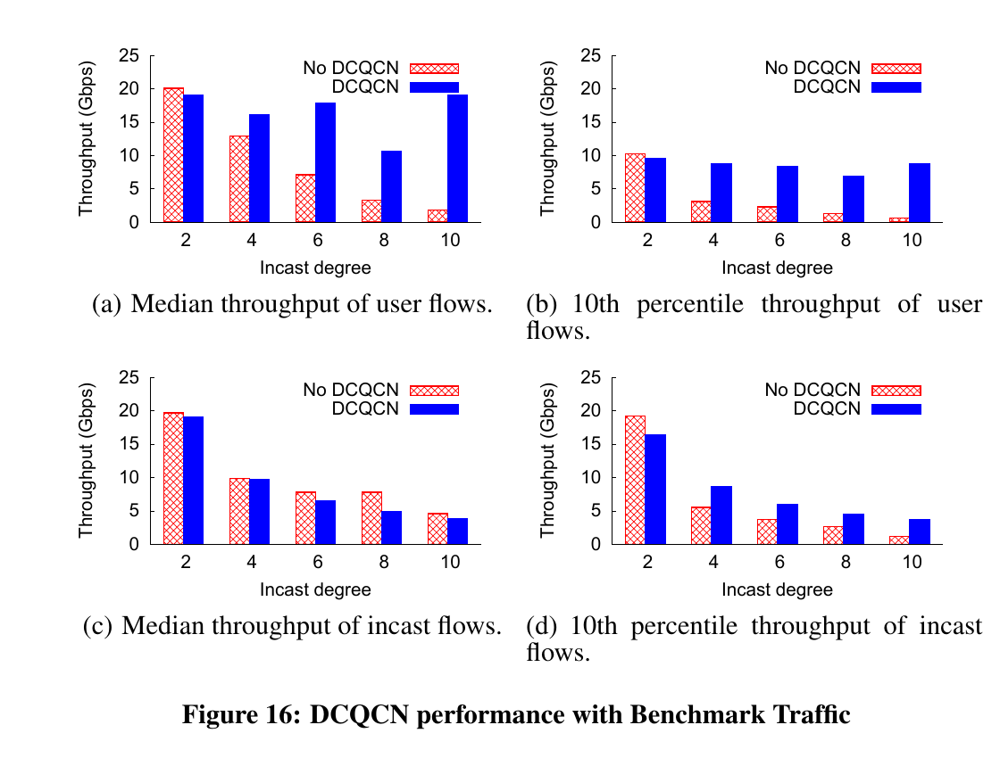
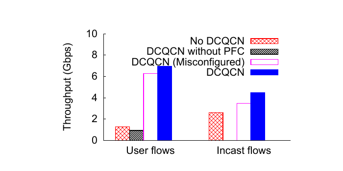

Congestion Control for Large-Scale RDMA Deployments
DCQCN 不取代 PFC，而是把 PFC 降為控制迴路反應前的快速、粗粒度無損護欄，再由交換器 ECN 標記、接收端 CNP 回饋與傳送端 NIC 逐流限速，長期控制公平性、佇列與吞吐。§3、§9 · PDF pp.4–5、13（論文標示 pp.526–527、535）
分析 這篇論文真正的新意不是一條降速公式，而是跨層角色重分配：交換器只留下標準化訊號，NIC 維持逐流狀態，PFC 只處理端到端回路來不及反應的瞬間。
文章目錄
RDMA／RoCE、PFC、ECN/CNP 與 Buffer 水位
先補四個必要概念
RDMA
NIC 直接在預先註冊的記憶體間搬資料，繞過主機網路協定棧；目標是降低 CPU 與軟體路徑延遲。
RoCEv2
保留 InfiniBand transport，改以 Ethernet／IP／UDP 封裝，使 RDMA 可跨 L3 路由並利用 ECMP。
PFC
Ingress queue 達門檻便要求直接上游暫停某個 priority；反應快但粒度是 port／priority，不是 flow。
ECN / CNP
交換器用 ECN 在封包留下壅塞訊號；RoCEv2 接收端再回 CNP，讓傳送端 NIC 知道該降哪一條 flow。
為何值得承擔 lossless fabric 的複雜度？
RDMA 的吸引力來自硬體資料路徑。它讓 NIC 繞過 host network stack，直接操作預先註冊的 buffer；因此 RoCEv2 的核心價值不是「另一種 Ethernet 封裝」，而是把低 CPU、低延遲的 RDMA transport 帶到 IP-routed datacenter fabric。§1–§2.1 · PDF pp.1–2（論文標示 pp.523–524）
實驗事實 兩台 Windows Server 2012 R2、40 Gb/s 主機的測試中，4 MB 傳輸要跑滿鏈路時，TCP 使用超過 20% aggregate CPU cycles；RDMA client 低於 3%，server 幾乎為零。2 KB 操作延遲為 TCP 25.4 µs、RDMA READ／WRITE 1.7 µs、SEND 2.8 µs。§2.1 · PDF p.2（論文標示 p.524）· Figure 1
這些數字只描述本文當時的主機、作業系統、NIC 與 workload，不是 TCP 與 RDMA 的普遍倍率；它們的作用是說明作者為何不願把壅塞控制搬回 CPU 軟體路徑。
PFC 的交換條件
RoCEv2 transport 仍假設底層接近無損。PFC 可在局部 buffer 即將耗盡時迅速暫停上游，卻會讓同一 priority 的無辜 flows 一起停下；PAUSE 也可能逐跳擴散。因此，「能防止 buffer overflow」與「能做逐流壅塞控制」是兩件不同的事。§2.2 · PDF pp.2–3（論文標示 pp.524–525）
有了這些背景，下一個問題是：Port-level Pause 如何造成 HOL、Unfairness 與壅塞擴散
Port-level Pause 如何造成 HOL、Unfairness 與壅塞擴散
問題不是單一 queue，而是 PFC 的控制粒度
PFC 在 port／priority 上停流，無法分辨誰造成壅塞。作者先用兩個微基準建立因果鏈：
- 不公平：四個 sender 共用 40 Gb/s bottleneck 時，拓樸上獨占一個 ingress port 的 H4 最高接近 20 Gb/s；H4 的最低吞吐仍高於 H1–H3 的最高吞吐。§2.2 · PDF p.3（論文標示 p.525）· Figure 3
- Victim flow：遠端壅塞即使不與 victim 的資料路徑重疊，仍可透過 PAUSE 級聯讓 victim throughput 由約 10 Gb/s 降至 4.5 Gb/s。§2.2 · PDF p.3（論文標示 p.525）· Figure 4
分析 局部 queue 壓力經逐跳 PAUSE 變成跨路徑干擾；因此只增加 ECMP path 或使用 8 個 priority class，都無法從根本上提供逐流公平。
設計需求的交集
- 在 lossless、L3-routed datacenter fabric 運作；
- 主控制邏輯在 NIC，避免 host CPU 成本；
- 無壅塞時 hyper-fast start，不以 TCP slow start 犧牲短 flow；
- 不要求新增交換器 ASIC 功能，只使用既有 PFC 與 RED/ECN；
- 同時追求公平、低振盪、短 queue 與高利用率。
QCN 的 flow identifier 與回饋封包設計綁在 L2，不能直接跨 IP-routed network；作者也認為 iWARP、DCTCP 與 TCP-Bolt 的 slow start、host software 或延遲／CPU 特性不符合上述交集。§2.3–§3 · PDF p.4（論文標示 p.526）
| 方案 | 訊號／控制位置 | 本文認為的差異 |
|---|---|---|
| PFC | 逐跳、port／priority PAUSE | 反應快且能防 overflow，但非逐流，會 congestion spreading；DCQCN 保留它作短期護欄。 |
| QCN | L2 switch 計算量化壅塞回饋，sender rate control | Flow 定義依賴 L2 header，不能直接跨 IP-routed fabric；改造需 NIC 與 switch ASIC 變更。 |
| DCTCP | ECN＋host TCP window control | 提供 ECN fraction 思路，但有 TCP slow start 與 host software 路徑；DCQCN 改成 NIC rate control、CNP 節流回饋。 |
| iWARP／TCP-Bolt | 以 TCP 或改造 TCP 支承 RDMA | 作者認為 latency、slow start、CPU／host implementation 與 threshold interplay 不符合其需求；本文未做完整 head-to-head benchmark。 |
| TIMELY | NIC timestamp／RTT gradient，端點 rate control | 同樣追求低 queue；本文指出 TIMELY 不以低 CPU 為主要目標，且未做直接比較，因此不能據此宣稱 DCQCN 勝出。 |
§2.3、§3.3、§8 · PDF pp.4–5、12–13（論文標示 pp.526–527、534–535）

問題的限制已經清楚；接著要抓住作者最關鍵的轉念。
讓 ECN 主動調速，讓 PFC 退回最後一道保險
Problem
RoCEv2 需要近乎無損，但 PFC 以 port／priority 暫停上游，會把局部壅塞擴散成 head-of-line blocking、不公平與 victim flow。
Mechanism
CP 以 RED/ECN 標記，NP 將壅塞轉成 CNP，RP 在 NIC 逐流降速與恢復；交換器無需新增自訂 ASIC 功能。
Key constraint
新 flow 無 slow start、可由 line rate 起跑，所以仍需 PFC 防住回饋尚未抵達時的短暫 buffer overflow。
Evidence verdict
小型 40 Gb/s testbed 證明機制對症且 tail throughput 改善；但多瓶頸公平、掉包恢復與跨硬體參數外推仍有限。
作者主張 資料中心需要 40 Gb/s、每 hop 低於 10 µs 且低 CPU overhead 的網路；DCQCN 可在 L3 routed、lossless fabric 上達成快速收斂、低佇列與高鏈路利用率，並已實作於 Mellanox NIC。Abstract、§1、§3 · PDF pp.1、4（論文標示 pp.523、526）
實驗事實 在作者的 3-tier Clos 測試床與 trace-derived benchmark 中，incast degree 10 時，DCQCN 將 incast flow 的第 10 百分位吞吐由低於 1.12 Gb/s 提至 3.43 Gb/s；同一次設定的 spine PAUSE 計數由超過 600 萬降至約 3,000。§6.2 · PDF p.10（論文標示 p.532）· Figures 15–16
分析 最穩健的結論是「DCQCN 在本文硬體與流量條件下顯著減少 PFC 介入並改善尾端吞吐」，而不是「任何規模的 RDMA 網路都得到固定倍數提升」。
三個先記住的 Takeaways
- Lossless 不等於 congestion-free：PFC 防掉包，卻沒有逐流公平概念。
- 端到端控制與逐跳流控互補：前者負責穩態，後者兜住回饋延遲。
- 參數就是方法的一部分：ECN 必須有機會早於 PFC 觸發，timer、byte counter 與 RED 曲線也必須一起調。
直覺成立後，再沿著一次完整執行看它如何落成系統。
CP–NP–RP 控制迴路、α 記憶與快慢兩段恢復
控制迴路：CP → NP → RP
- Congestion Point（CP，交換器）：egress queue 進入 RED-like 區間後，以 ECN 標記經過的資料封包。交換器只提供標準訊號，不替每條 flow 維護狀態。§3.1 · PDF p.4（論文標示 p.526）· Figure 5
- Notification Point（NP，接收端 NIC）：同一 flow 收到 ECN-marked packet 且最近 (N) 微秒沒有送過 CNP 時，立即回傳 Congestion Notification Packet；其後每個時間窗最多一個。本文部署 (N=50\,\mu s)。
- Reaction Point（RP，傳送端 NIC）：收到 CNP 後儲存 target rate、依 α 降低 current rate；沒有回饋時讓 α 衰減，再由 timer 與 byte counter 觸發 fast recovery、additive increase 或 hyper increase。
§3.1 · PDF pp.4–5（論文標示 pp.526–527）· Figures 6–7、Equations 1–4
分析 CP 不直接計算「該降多少」；NP 只節流回饋；RP 才保存每 flow 的 (R_C)、(R_T)、α、timer 與 counter。這使交換器維持通用，但把 NIC state capacity 與 CNP generation rate 變成可擴展性邊界。
為何新 flow 不 slow start？
若本機沒有其他 active flow，新 flow 由 full line rate 起跑。作者用此選擇優化「小傳輸且通常無壅塞」的共同情境；代價是 ECN → CNP → 降速的回路尚未走完前，突發流量可能迅速吃掉 buffer。§3.1、§3.3 · PDF p.5（論文標示 p.527）
作者主張 本文版本的 DCQCN 依賴 PFC 在回饋延遲期間防止 packet loss；DCQCN 的目標是讓 PFC 在穩態很少被觸發，而不是取消 PFC。§2.3、§3.3、§8 · PDF pp.4–5、12–13（論文標示 pp.526–527、534–535）
ECN 與 PFC 門檻必須協同
ECN 觀察 egress queue，PFC 卻由 ingress queue 觸發。若 (t_{PFC}) 太低或 (t_{ECN}) 太高，PAUSE 會先發生，逐流回路來不及接手；若 PFC 太晚，buffer 又可能 overflow。作者因此把 shared-buffer occupancy 納入動態 PFC threshold，目標僅是保證 ECN 有機會先發生。§4 · PDF p.6（論文標示 p.528）
收到 CNP：記住目標並按壅塞程度降速
意義：(R_C) 是目前 sending rate，(R_T) 是之後恢復時追趕的 target rate；α 是近期壅塞的平滑狀態，初值為 1。連續收到 CNP 時，α 趨高，降速更重。§3.1 · PDF p.4（論文標示 p.526）· Equation 1
沒有 CNP：讓壅塞記憶衰退
意義：若 (K) 時間內沒有回饋，RP 逐步降低 α；本文 (K=55\,\mu s)，必須大於 50 µs 的 CNP generation interval，以免兩個合法 CNP 之間誤判壅塞結束。§3.1 · PDF p.5（論文標示 p.527）· Equation 2
速率恢復：先快後慢
意義：前 (F=5) 次 recovery event 先向固定 (R_T) 折半逼近，之後每次把 target 增加固定 (R_{AI})。timer 讓低速 flow 即使送不滿 byte threshold 也能恢復。§3.1 · PDF p.5（論文標示 p.527）· Equations 3–4
Buffer threshold：先讓 ECN 發聲，再由 PFC 兜底
變數：(B) 為 shared buffer、(n) 為 port 數、(s) 為目前已占用 buffer、(t_{flight}) 為 PAUSE 生效前的 headroom。本文 Trident II 設定 (t_{flight}=22.4\,KB)、β=8，得到 (t_{ECN}<21.75\,KB)。這只保證 ECN 先於 PFC，不保證 PFC 永不觸發。§4 · PDF p.6（論文標示 p.528）
流體模型：公平固定點，不是全域穩定性證明
意義：在 (N) 條 greedy long flows、單一容量 (C) bottleneck、ECN 早於 PFC、固定 control-loop delay 等假設下，令模型導數為零可得唯一公平 fixed point；作者也以數值方式求得唯一 marking probability。完整 stability analysis 留待未來工作。§5.1 · PDF p.7（論文標示 p.529）· Equations 5–11，特別是 Equation 10

方法看似合理，真正的問題是：實驗有沒有把這條因果鏈撐起來？
從單一瓶頸到混合流量：DCQCN 是否修好尾端吞吐
三層證據鏈
| 層級 | 設定 | 回答的問題 |
|---|---|---|
| PFC 病徵與基本機制 | 40 Gb/s 主機與 Arista 7050QX32；重現 unfairness、victim flow，再啟用 DCQCN。 | 問題是否真的來自 PFC 粒度？逐流控制是否對症？ |
| 模型與參數 | 三台機器的兩 flow 實驗；另以 20 台機器做 (K{:}1) incast，(K=1\ldots19)。 | 流體模型是否貼近 NIC 實作？timer、RED、(g) 等旋鈕如何影響收斂與 queue？ |
| 3-tier Clos benchmark | 4 ToR、4 leaf、2 spine，每 ToR 5 台主機；BGP／ECMP；20 組 user pairs 與一組 disk-rebuild-like incast。 | 混合流量下的 median／tail throughput、PAUSE 數量與負載承載能力。 |
Benchmark 的流量特徵取自某 480-machine cluster 一天、超過 1,000 萬條 flows 的 trace，但作者沒有直接 replay；而是合成相同 flow-size distribution，並用 incast 當 disk rebuild 的合理 proxy。Incast degree 為 2–10；每個設定隨機選 hosts 與 pairs、重複 5 次，每次 2 分鐘。§6、§6.2 · PDF pp.9–10（論文標示 pp.531–532）
分析 trace-derived 不等於 production replay；公開結果能回答控制機制在受控 3-tier 拓樸上的效果，不能直接代表 480 台叢集的端到端應用收益。
先確認 PFC 的兩個病徵被修復
重做 Figure 3 與 Figure 4 的情境後，四個 senders 幾乎平分瓶頸，且增加遠端 sender 時 victim flow throughput 不再下降。這是最直接的「機制對症」證據。§3.2 · PDF pp.5–6（論文標示 pp.527–528）· Figures 8–9
模型、實作與單一瓶頸
兩 flow 實驗中，第二條 flow 在 10 ms 後加入，流體模型與 NIC 實作的 sending-rate 曲線相近。20 台主機的 (K{:}1) incast 中，aggregate throughput 始終高於 39 Gb/s，queue 未超過 100 KB，作者換算為 40 Gb/s 下約 20 µs 的排隊量。§5.1、§6.1 · PDF pp.6–7、9（論文標示 pp.528–529、531）· Figures 10、14
混合 benchmark：收益主要出現在尾端
實驗事實 incast degree 10 時，兩台 spine 在未啟用 DCQCN 的單次 run 收到超過 600 萬個 PAUSE；啟用後約 3,000。相同 degree 下，incast flows 的第 10 百分位吞吐由低於 1.12 Gb/s 提升至 3.43 Gb/s，接近四分之一個 40 Gb/s bottleneck 的 4 Gb/s fair share。§6.2 · PDF p.10（論文標示 p.532）· Figures 15–16
Figure 16 同時顯示 user-flow median／tail throughput 在 incast 增大時保持得更好；incast flows 本身的 median 可能稍降，但 tail 更均勻。這支持 DCQCN 把 PFC 造成的跨流干擾轉為較可控的逐流分享。
正確解讀「16×」
作者主張 固定 incast degree 10，在此 3-tier testbed 中，啟用 DCQCN 且有 80 組 user communicating pairs 的 user-flow throughput CDF，約可匹配未啟用 DCQCN、僅 5 組時的表現；作者據此稱可承載 16× 更多 user traffic 而不劣化。§6.2 · PDF p.11（論文標示 p.533）· Figure 17
這不是 16× link throughput，也不是跨 workload 的一般容量倍數，而是兩個指定負載端點之間的比較。
Queue-length proxy，而非 application latency
20:1 incast microbenchmark 中，DCQCN 的第 95 百分位 instantaneous egress queue length 為 76.6 KB，DCTCP 為 162.9 KB。結果支持較低 queueing delay 的推論，但論文沒有直接量測 request latency 或 flow completion time。§6.3 · PDF p.11（論文標示 p.533）· Figure 19
為何不能直接沿用 QCN／DCTCP 參數？
Strawman 設定 (B=150\,KB)、(T=1.5\,ms)、(K_{min}=K_{max}=40\,KB)、(P_{max}=1)、(g=1/16) 時，兩 flows 無法收斂。原因是 byte counter 讓送得快的 flow 更快取得升速事件；QCN 原本用 probabilistic feedback 抵消，DCQCN 並沒有相同回饋。§5.2 · PDF p.8（論文標示 p.530）· Figures 11–12
作者選定的成套參數
| 參數 | 值 | 因果角色 |
|---|---|---|
| Rate-increase timer | 55 µs | 略大於 50 µs CNP interval；讓低速 flow 不靠送滿大量 bytes 也能恢復。 |
| Byte counter | 10 MB | 避免高速 flow 太快進入 hyper increase。 |
| (K_{min}) | 5 KB | 儘早開始低機率 ECN marking。 |
| (K_{max}) | 200 KB | 保留漸進 RED marking 區間。 |
| (P_{max}) | 1% | 讓較高速 flow 統計上更易得到更多 CNP，而非所有 flow 同時硬切。 |
| (g) | 1/256 | 降低 queue 高度與振盪，接受稍慢收斂。 |
| (R_{AI}) | 40 Mb/s | 平衡恢復速度、振盪與 incast scalability。 |
| (F) | 5 | Fast-recovery iterations。 |
§5.2 · PDF pp.8–9（論文標示 pp.530–531）· Figures 11–14、Table 2
PFC 與門檻消融
實驗事實 8:1 incast 中，保留 DCQCN 但關閉 PFC 時，incast 第 10 百分位吞吐為 0；保留 PFC 卻設成 (t_{PFC}=24.47\,KB)、(t_{ECN}=120\,KB) 時，結果勝過僅用 PFC，仍劣於正確設定。§6.2 · PDF p.11（論文標示 p.533）· Figure 18
這支持「本文 DCQCN 必須和 PFC、正確 threshold coordination 一起部署」，但不能推導所有 RDMA congestion control 都必須依賴 PFC。
敏感度與可擴展性界線
- 額外 50 µs feedback delay 仍可收斂；α update interval 由 55 增至 110 µs 只略微放慢，但 RTT 顯著不同時仍須重調。
- 較小 (g) 降低 queue 與變動，代價是稍慢收斂。
- 目前 (R_{AI}) 設定在 16:1 incast 不造成 buffer starvation；減半可支援 32:1，但收斂更慢。
- ConnectX-3 Pro 的 CNP capacity 約能以要求頻率服務 10–20 條同時壅塞 flows；ConnectX-4 則超過 200 條。這是 NIC 實作邊界，不是演算法方程式會自動消失的成本。
§3.3、§5.2 · PDF pp.6、8（論文標示 pp.528、530）


數據回答了部分問題；剩下的是適用邊界與仍未被證明的部分。
流體模型、2015 硬體與參數可移植性
| 面向 | 優點／證據 | 限制／風險 |
|---|---|---|
| 部署介面 | 交換器只需既有 PFC 與 RED/ECN；逐流狀態主要在 NIC。 | 不是零設定：ECN/PFC threshold coordination 是正確性的核心。 |
| 公平與隔離 | 單瓶頸與 benchmark 明顯改善 fairness、victim flow 與 tail throughput。 | Multi-bottleneck parking-lot 情境只被 RED-like marking 緩解，未完全解決 max-min fairness。§7 · PDF pp.11–12（論文標示 pp.533–534）· Figure 20 |
| Loss tolerance | PFC 可防主要的 buffer-overflow loss。 | Corruption、故障與錯誤設定仍會掉包；ConnectX-3 Pro 的 go-back-N 在 loss rate 超過 0.1% 後吞吐快速惡化。§7 · PDF p.12（論文標示 p.534）· Figure 21 |
| 延遲 | Queue-length CDF 支持較低 queueing delay。 | 沒有直接報告 application latency／FCT，也沒有與 TIMELY 做實驗比較。 |
| 規模 | 演算法以大型 routed datacenter 為設計目標，作者報告已進入 NIC 與資料中心部署。 | 公開 evaluation 仍是小型可控 testbed；超過 800 台 simulation 未刊出，full-scale deployment 當時仍進行中。§7 · PDF p.12（論文標示 p.534） |
| 共存與故障 | 可用 802.3 priority 隔離 TCP 與 RDMA traffic。 | TCP friendliness 不是本文目標、沒有評估；故障 NIC 造成 PFC storm 的緩解仍在研究。 |
分析 應解讀為設計場景與部署方向，不是本文公開 testbed 的規模證據。最重要的未完成部分是一般化穩定性、多瓶頸公平、production failure handling 與跨硬體重調方法。
從 DCQCN 延伸到今天的無損網路
最值得帶走的系統設計觀
DCQCN 把一個看似「壅塞演算法」的問題拆成三種時間尺度：
- 封包／微秒級：PFC 先確保突發期間不因 buffer overflow 丟包；
- 回饋回路級：ECN → CNP → RP 對真正壅塞的 flow 降速；
- 穩態級：α、timer、byte counter、RED 機率與 additive increase 共同決定公平、queue 與振盪。
這也解釋為何「開啟 ECN」不是完整部署：如果 PFC 比 ECN 更早觸發，或 timer 與 feedback latency 不匹配，控制迴路在名稱上存在，因果上卻沒有機會主導系統。
搬到新硬體時，應重新量測而非複製 Table 2
- 鏈路速率、MTU、RTT／CNP generation interval；
- switch shared-buffer accounting、PFC headroom 與 ingress／egress threshold 語義；
- NIC 可維持的逐流 state、rate limiter granularity 與 CNP processing capacity；
- 目標 workload 的 incast degree、flow-size distribution、multi-bottleneck 頻率與可接受 tail metric。
推測 若把本文帶到更高速鏈路與更深的 oversubscription，最值得重做的不是單純提高 (K_{max})，而是把 control-loop delay、NIC feedback capacity、PFC activation ratio 與 multi-bottleneck fairness 納入同一個可驗證模型；否則 buffer 變大只會掩蓋反應時間，未必改善隔離。
分析 本文的強項是把可部署限制、硬體狀態機、buffer 推導、流體模型與受控實驗串成閉環。它沒有證明所有情境的穩定與公平，卻清楚示範：datacenter congestion control 的正確性常存在於 NIC、switch threshold 與流量時間尺度的交界。§9 · PDF p.13（論文標示 p.535）
- 若允許新 flow line-rate 起跑，除了 PFC，還有哪些 bounded-burst 或 credit 機制可以兜住 ECN/CNP 回饋延遲？它們會改變 DCQCN 的哪些參數？
- Figure 18 能證明「本文版本需要 PFC」，但能否證明「RDMA congestion control 必須使用 PFC」？還缺哪些對照組？
- 流體模型的 (R_C=C/N) 固定點在 multi-bottleneck、短流與非同步 CNP 下會如何改變？應以哪個 tail fairness 指標檢驗？
- 如果在 100／400 Gb/s、不同 shared-buffer ASIC 上重部署，應先量測哪些量，如何判斷 ECN 確實先於 PFC 主導？
狀態變數、門檻公式與證據索引
| 正式標題 | Congestion Control for Large-Scale RDMA Deployments |
|---|---|
| 作者 | Yibo Zhu、Haggai Eran、Daniel Firestone、Chuanxiong Guo、Marina Lipshteyn、Yehonatan Liron、Jitendra Padhye、Shachar Raindel、Mohamad Haj Yahia、Ming Zhang |
| 單位 | Microsoft、Mellanox、University of California, Santa Barbara |
| 發表 | ACM SIGCOMM ’15，2015 年 8 月 17–21 日，London, United Kingdom |
| DOI | 10.1145/2785956.2787484 |
| 官方 PDF | SIGCOMM 2015 PDF |
| 本地 PDF | 開啟本地 PDF |
| 頁數 | 共 14 頁 |
| 程式碼 | 論文未提供公開實作；演算法由作者實作於 Mellanox NIC。 |
分析 本文歸入 AI Infrastructure / Cluster Networking：其主要貢獻不是 RDMA transport 或交換器拓樸本身，而是資料中心 RoCEv2 網路上由 PFC、ECN/CNP 與 NIC 逐流 rate control 組成的壅塞控制閉環。§2.3–§4 · PDF pp.4–6（論文標示 pp.526–528）
術語表
- RDMA
- Remote Direct Memory Access；NIC 直接存取已註冊記憶體，降低 CPU 與軟體路徑介入。
- RoCEv2
- RDMA over Converged Ethernet v2；以 Ethernet／IP／UDP 承載 InfiniBand transport。
- PFC
- Priority-based Flow Control；逐跳暫停某 priority 的 ingress traffic，用於避免 buffer overflow。
- ECN
- Explicit Congestion Notification；交換器在封包標記壅塞，而非先丟包。
- CNP
- Congestion Notification Packet；RoCEv2 接收端 NIC 回給 sender 的壅塞通知。
- CP／NP／RP
- Congestion Point／Notification Point／Reaction Point，分別是標記的交換器、回饋的接收端 NIC、降速的傳送端 NIC。
- Head-of-line blocking
- 同一 queue 或 priority 中，無辜 flow 因前方／同組壅塞流量而一起被阻塞。
- Incast
- 多個 sender 同時向少數 receiver 或同一 bottleneck 傳送，短時間形成大量聚合流量。
- (R_C／R_T／α)
- Current rate、target rate 與壅塞平滑狀態；三者共同控制 RP 的降速與恢復。
- (K_{min}／K_{max}／P_{max})
- RED-like ECN 曲線的起始門檻、全標記門檻與區間頂端標記機率。
重點證據索引
- RDMA CPU／latency 動機：§2.1，PDF p.2（論文標示 p.524），Figure 1。
- PFC victim flow：§2.2，PDF p.3（論文標示 p.525），Figure 4。
- RP 狀態機：§3.1，PDF p.5（論文標示 p.527），Figure 7。
- ECN／PFC threshold 推導：§4，PDF p.6（論文標示 p.528）。
- 公平固定點：§5.1，PDF p.7（論文標示 p.529），Equation 10。
- 最終參數：§5.2–§6.1，PDF pp.8–9（論文標示 pp.530–531），Figures 11–14。
- Benchmark throughput／PAUSE：§6.2，PDF p.10（論文標示 p.532），Figures 15–16。
- PFC 與門檻消融：§6.2，PDF p.11（論文標示 p.533），Figure 18。
- Queue-length latency proxy：§6.3，PDF p.11（論文標示 p.533），Figure 19。
- 規模與部署限制：§7，PDF p.12（論文標示 p.534）。